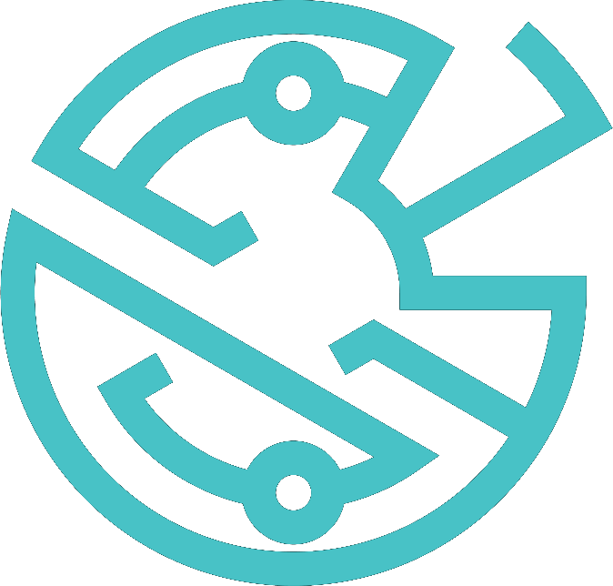

<!doctype html>
<html lang="ko"><head><meta charset="utf-8"><meta name="viewport" content="width=device-width,initial-scale=1,viewport-fit=cover">
<meta name="theme-color" content="#070909"><title>Nectmele Signal</title>
<link rel="preconnect" href="https://fonts.googleapis.com"><link rel="preconnect" href="https://fonts.gstatic.com" crossorigin>
<link rel="stylesheet" href="https://fonts.googleapis.com/css2?family=EB+Garamond:wght@500&display=swap">
<link rel="stylesheet" href="https://cdn.jsdelivr.net/gh/orioncactus/pretendard@v1.3.9/dist/web/variable/pretendardvariable-dynamic-subset.min.css">
<style>
/* 넥트멜레: 검은 바에 시험관 하나. 열 번 답하면 층층이 차오르고, 화면의 빛은 그 액체에서만 나온다.
   색: 브랜드 원본대로 검정 + 청록(#45C2C6). 글꼴: 한글은 Pretendard 하나, 영문 칵테일 이름만 EB Garamond(브랜드 매뉴얼 계열).
   간격 4/8 단위, 누르는 칸 48px 이상, 본문 대비 4.5:1 이상. */
:root {
  --bg: #070909; --fg: #F3F6F5; --mute: #9FAEAD; --line: rgba(243,246,245,.14); --card: rgba(243,246,245,.055);
  --nm: #45C2C6; --glow: #45C2C6; --err: #FF9C8F;
  --sans: "Pretendard Variable", Pretendard, "Apple SD Gothic Neo", "Noto Sans KR", "Malgun Gothic", sans-serif;
  --name: "EB Garamond", "Cormorant Garamond", Georgia, serif;
  --gut-l: max(20px, env(safe-area-inset-left, 0px)); --gut-r: max(20px, env(safe-area-inset-right, 0px));
  --ease: cubic-bezier(.22,.8,.24,1);
  color-scheme: dark;
}
* { box-sizing: border-box; }
html { background: var(--bg); -webkit-text-size-adjust: 100%; }
body { margin: 0; background: var(--bg); color: var(--fg); font-family: var(--sans); font-size: 16px; line-height: 1.6;
  word-break: keep-all; overflow-wrap: break-word; -webkit-font-smoothing: antialiased; letter-spacing: -.01em; }
button, input { font: inherit; letter-spacing: inherit; }
button { touch-action: manipulation; -webkit-tap-highlight-color: transparent; }
:focus-visible { outline: 2px solid var(--nm); outline-offset: 3px; }
h2:focus { outline: none; }
p, .line, .from { text-wrap: pretty; }
.halo { position: fixed; inset: 0; pointer-events: none; opacity: .3; transition: background-color 1s; background-color: var(--glow);
  -webkit-mask-image: radial-gradient(60% 46% at 8% 82%, #000, transparent); mask-image: radial-gradient(60% 46% at 8% 82%, #000, transparent); }

.stage { position: relative; max-width: 620px; margin: 0 auto; padding: 0 var(--gut-r) 0 var(--gut-l);
  display: grid; grid-template-columns: 52px minmax(0, 1fr); column-gap: 24px; }

/* 시험관 */
.tubecol { position: sticky; top: 0; height: 100vh; height: 100svh; padding: 20px 0 calc(24px + env(safe-area-inset-bottom, 0px)); }
.glass { position: relative; height: 100%; width: 52px; margin: 0 auto; border-radius: 8px 8px 26px 26px; }
.glass .body { position: absolute; inset: 6px 3px 0; border-radius: 0 0 23px 23px; overflow: hidden; background: rgba(243,246,245,.04);
  box-shadow: inset 0 0 0 1px rgba(243,246,245,.28), inset 6px 0 10px -6px rgba(243,246,245,.25), inset -8px 0 14px -8px rgba(0,0,0,.8); }
.glass .lip { position: absolute; top: 0; left: 0; right: 0; height: 10px; border-radius: 50%; border: 1.5px solid rgba(243,246,245,.6); background: rgba(7,9,9,.6); }
.glass .liq { position: absolute; inset: 0; transform: translateY(100%); transition: transform .9s var(--ease); }
.glass .liq .fill { position: absolute; inset: 0; transition: transform .9s var(--ease); }
.glass .liq .top { position: absolute; top: -5px; left: 0; right: 0; height: 10px; border-radius: 50%; background: var(--glow); filter: brightness(1.25); transition: background-color .6s; }
.glass .shine { position: absolute; top: 18px; bottom: 34px; left: 10px; width: 5px; border-radius: 5px; background: linear-gradient(rgba(255,255,255,.5), rgba(255,255,255,.08) 70%, transparent); }
.glass .marks { position: absolute; right: 3px; top: 6px; bottom: 0; width: 9px; }
.glass .marks i { position: absolute; right: 0; width: 8px; height: 1px; background: rgba(243,246,245,.45); }
.glass .stream { position: absolute; top: 4px; left: 50%; width: 4px; margin-left: -2px; height: 100%; border-radius: 4px; background: var(--glow); transform: scaleY(0); transform-origin: top; opacity: 0; }
.glass.pour .stream { animation: pour .75s ease-in; }
@keyframes pour { 0% { transform: scaleY(0); opacity: 1; } 45% { transform: scaleY(1); opacity: 1; } 100% { transform: scaleY(1); opacity: 0; } }

.col { min-width: 0; min-height: 100vh; min-height: 100svh; display: flex; flex-direction: column; }
#app { flex: 1; display: flex; flex-direction: column; }
#app > * { animation: enter .35s var(--ease); }
@keyframes enter { from { transform: translateX(10px); opacity: .4; } }

.btn { min-height: 54px; border: 0; border-radius: 27px; padding: 0 24px; cursor: pointer; font-weight: 700; font-size: 17px; background: var(--fg); color: #0A0D0D; transition: background-color .15s, opacity .15s; }
.btn:hover { background: #fff; } .btn:active { opacity: .8; }
.btn.line { background: transparent; color: var(--fg); box-shadow: inset 0 0 0 1.5px rgba(243,246,245,.5); }
.btn.line:hover { background: var(--card); }
.btn.text { background: transparent; color: var(--mute); font-weight: 500; font-size: 15px; min-height: 48px; padding: 0 8px; }
.btn[disabled] { opacity: .55; cursor: default; }

/* 첫 화면 */
.hero { flex: 1; display: flex; flex-direction: column; padding: 28px 0 calc(24px + env(safe-area-inset-bottom, 0px)); gap: 20px; }
.hero .logo { width: 148px; height: auto; filter: invert(1); align-self: flex-start; }
.hero .title { margin-top: auto; }
.hero .mark { width: 52px; height: 52px; display: block; margin-bottom: 20px; }
.hero h1 { margin: 0; font-weight: 800; font-size: clamp(38px, 11vw, 56px); line-height: 1.18; letter-spacing: -.045em; }
.hero .lead { margin: 16px 0 0; color: var(--mute); font-size: 16px; max-width: 22em; }
.hero .btn { width: 100%; margin-top: 12px; }

/* 질문 */
.bar { display: flex; align-items: center; justify-content: space-between; height: 64px; margin-left: -12px; }
.iconbtn { width: 48px; height: 48px; display: grid; place-items: center; background: none; border: 0; color: var(--fg); cursor: pointer; border-radius: 50%; }
.iconbtn:hover { background: var(--card); }
.count { font-size: 15px; color: var(--mute); font-variant-numeric: tabular-nums; }
.count b { color: var(--fg); font-weight: 700; }
.q { flex: 1; display: flex; flex-direction: column; }
.q h2 { margin: 12px 0 0; font-weight: 800; font-size: clamp(28px, 8vw, 38px); line-height: 1.26; letter-spacing: -.04em; text-wrap: balance; }
.q .why { margin: 12px 0 0; color: var(--mute); font-size: 15px; line-height: 1.55; }
.opts { display: grid; gap: 8px; margin: 28px 0 24px; }
.opt { --edge: color-mix(in oklab, var(--c, #8A9896) 62%, white); position: relative; text-align: left; color: var(--fg); background: var(--card); border: 0; border-radius: 16px; cursor: pointer;
  min-height: 64px; padding: 12px 16px; display: flex; flex-direction: column; justify-content: center; transition: background-color .18s, box-shadow .18s; }
.opt b { font-weight: 700; font-size: 17px; line-height: 1.35; letter-spacing: -.025em; }
.opt small { font-size: 14px; color: var(--mute); line-height: 1.45; margin-top: 2px; }
.opt:hover { background: rgba(243,246,245,.09); }
.opt:active { background: rgba(243,246,245,.14); }
.opt[aria-pressed="true"] { background: color-mix(in oklab, var(--c, #8A9896) 34%, #070909); box-shadow: inset 0 0 0 2px var(--edge); }
.opt[aria-pressed="true"] small { color: #DCE5E4; }
.opts.chips { display: flex; flex-wrap: wrap; gap: 10px 8px; }
.opts.chips .opt { min-height: 50px; padding: 0 18px; border-radius: 25px; }
.opts.chips .opt b { font-size: 16px; font-weight: 600; }
.opts.chips small { display: none; }
.opt.none { background: transparent; box-shadow: inset 0 0 0 1px var(--line); }
.opt.none b { font-weight: 500; color: var(--mute); }
.nav { position: sticky; bottom: 0; margin-top: auto; padding: 20px 0 calc(20px + env(safe-area-inset-bottom, 0px)); pointer-events: none; }
.nav .btn { width: 100%; pointer-events: auto; box-shadow: 0 0 32px 12px rgba(7,9,9,.75); }

/* 결과 */
body.done .stage { display: block; }
body.done .tubecol { position: absolute; left: var(--gut-l); top: 40px; height: 270px; width: 76px; padding: 0; }
body.done .glass { width: 76px; }
body.done .glass .body { border-radius: 0 0 35px 35px; }
.reshead { min-height: 342px; padding: 0 0 12px 100px; display: flex; flex-direction: column; justify-content: center; }
.reshead h2 { margin: 0; font-weight: 800; font-size: clamp(30px, 8.6vw, 44px); line-height: 1.22; letter-spacing: -.045em; }
.reshead p { margin: 14px 0 0; color: var(--mute); font-size: 15px; }
.picks { display: grid; gap: 20px; margin-top: 24px; }
.item { background: var(--card); border-radius: 24px; padding: 24px 20px 20px; display: grid; gap: 16px; }
.item.first { background: color-mix(in oklab, var(--glow) 24%, #070909); }
.item .rank { font-size: 14px; color: var(--mute); display: flex; justify-content: space-between; gap: 8px; font-variant-numeric: tabular-nums; }
.item.first .rank { color: #D5DFDE; }
.item h3 { margin: -4px 0 0; font-weight: 500; }
.item .en { display: block; font-family: var(--name); font-weight: 500; font-size: clamp(40px, 11.5vw, 54px); line-height: 1.02; letter-spacing: -.02em; overflow-wrap: anywhere; }
.item .ko { display: block; font-weight: 600; font-size: 16px; margin-top: 8px; }
.item .line { font-size: 16px; line-height: 1.6; }
.item .spec { display: grid; grid-template-columns: 1fr auto; gap: 16px; border-block: 1px solid var(--line); padding: 12px 0; }
.item .spec dt { font-size: 13px; color: var(--mute); } .item .spec dd { margin: 2px 0 0; font-weight: 600; font-size: 16px; }
.item .spec, .recipe { margin: 0; }
.item.first .spec dt, .item.first .from small, .item.first .hits { color: #D5DFDE; }
.item .hits { margin: 0; font-size: 15px; color: var(--mute); }
.item .from { margin: 0; font-size: 16px; line-height: 1.65; }
.order { display: grid; gap: 12px; } .order:empty { display: none; }
.order .btn { width: 100%; }
.order label { display: grid; gap: 6px; font-size: 15px; }
.order input { min-height: 52px; font-size: 16px; padding: 0 16px; border: 1.5px solid rgba(243,246,245,.45); border-radius: 14px; width: 100%; background: rgba(7,9,9,.5); color: var(--fg); }
.order input::placeholder { color: var(--mute); }
.wait { border-radius: 16px; background: rgba(7,9,9,.45); padding: 16px; font-weight: 600; font-size: 16px; line-height: 1.5; }
.wait small { display: block; color: #C3CFCE; font-weight: 400; font-size: 14px; margin-top: 4px; }
.wait.on::before { content: ""; display: block; height: 3px; border-radius: 3px; margin-bottom: 12px; background: var(--nm); transform-origin: left; animation: wait 2.4s ease-in-out infinite; }
@keyframes wait { 0% { transform: scaleX(.08); } 50% { transform: scaleX(1); } 100% { transform: scaleX(.08); } }
.got h4 { margin: 0 0 12px; font-size: 18px; font-weight: 700; }
.recipe { display: grid; gap: 12px; font-size: 16px; }
.recipe dt { color: #C3CFCE; font-size: 13.5px; } .recipe dd { margin: 2px 0 0; white-space: pre-line; }
.mine { display: grid; gap: 12px; margin-top: 24px; } .mine:empty { display: none; }
.mine .box { background: var(--card); border-radius: 20px; padding: 18px 18px 20px; display: grid; gap: 12px; }
.mine .box > b { font-weight: 700; font-size: 17px; }
.coda { padding: 36px 0 8px; color: var(--mute); font-size: 15px; }
.endnav { display: grid; gap: 4px; }
.err { box-shadow: inset 0 0 0 1.5px var(--err); border-radius: 14px; padding: 14px 16px; font-size: 15px; }
footer { display: none; } body.done footer { display: grid; gap: 14px; padding: 32px 0 calc(40px + env(safe-area-inset-bottom, 0px)); color: var(--mute); font-size: 13.5px; }
footer img { width: 120px; height: auto; filter: invert(1); opacity: .85; }
@media (min-width: 700px) { .stage { grid-template-columns: 84px minmax(0, 1fr); column-gap: 56px; } .glass { width: 72px; } .glass .body { border-radius: 0 0 33px 33px; } }
@media (prefers-reduced-motion: reduce) { .glass .liq, .glass .liq .fill, .halo, #app > * { transition: none; animation: none; } .glass.pour .stream, .wait.on::before { animation: none; } }

/* WebGL 시험관: 켜지면 CSS 시험관을 숨기고 캔버스를 쓴다 */
.glass canvas.gl { position: absolute; inset: 0; width: 100%; height: 100%; display: block; }
.glass.hasgl > :not(canvas) { display: none; }
.stage { grid-template-columns: 64px minmax(0, 1fr); column-gap: 20px; }
.tubecol { margin-left: -6px; } .glass { width: 64px; }
body.intro .stage { grid-template-columns: clamp(84px, 27vw, 128px) minmax(0, 1fr); column-gap: 18px; }
body.intro .glass { width: 100%; } body.intro .tubecol { margin-left: -10px; }
.hero h1 { font-size: clamp(32px, 10.4vw, 56px); }
body.done .tubecol { width: 92px; height: 286px; top: 32px; margin-left: 0; } body.done .glass { width: 92px; } body.done .reshead { padding-left: 116px; }
@media (min-width: 700px) { .stage { grid-template-columns: 92px minmax(0, 1fr); column-gap: 52px; } .glass { width: 92px; } body.intro .stage { grid-template-columns: 136px minmax(0, 1fr); } }
</style></head><body class="intro">
<div class="halo" aria-hidden="true"></div>
<div class="stage">
  <aside class="tubecol" aria-hidden="true"><div class="glass" id="glass">
    <div class="body"><div class="liq" id="liq"><div class="top"></div><div style="position:absolute;inset:0;overflow:hidden"><div class="fill" id="fill"></div></div></div></div>
    <div class="marks" id="marks"></div><div class="stream"></div><div class="shine"></div><div class="lip"></div>
  </div></aside>
  <div class="col">
    <main id="app"></main>
    <footer><div>레시피는 Connector가 확인하면 열려요. 도수는 얼음 녹는 것까지 계산했어요.</div></footer>
  </div>
</div>
<script>
const Q = [
  { id: "lvl", t: "오늘은 얼마나 취하고 싶어요?", type: "one", o: [
    ["술 없이", "오늘은 안 마실래요", "#BFE3DA"], ["술맛 거의 안 나게", "음료처럼 가볍게", "#F1D9A0"],
    ["살짝 기분 좋게", "적당히 알딸딸하게", "#E2A24E"], ["술맛 제대로", "한 잔을 오래오래", "#8A4A1F"] ] },
  { id: "drink", t: "평소에 어떤 술을 즐겨요?", why: "뭘 자주 드시는지 알면 입맛 맞추기가 쉬워요.", type: "one", o: [
    ["소주", "깔끔한 게 좋아요", "#D9E7EA"], ["맥주", "시원한 게 좋아요", "#E6B642"], ["와인", "향긋한 게 좋아요", "#86283A"],
    ["위스키", "묵직한 게 좋아요", "#A8642A"], ["칵테일을 꽤 마셔 봤어요", "클래식이 궁금해요", "#45C2C6"], ["술은 잘 몰라요", "처음이라 편하게", "#C9D2C3"] ] },
  { id: "fav", t: "최근에 맛있게 드신 칵테일 있어요?", why: "그거랑 비슷한 잔을 찾아 드릴게요. 여러 개 골라도 돼요.", type: "many", none: "처음이에요", o: [
    ["모히또", "", "#9CCB6B"], ["진토닉", "", "#BFE0DA"], ["하이볼", "", "#E9C46A"], ["깔루아밀크", "", "#C8A27C"],
    ["롱아일랜드 아이스티", "", "#B5652E"], ["마가리타", "", "#E3DD8C"], ["올드패션드", "", "#9C5318"],
    ["피냐콜라다", "", "#F1E1B5"], ["에스프레소마티니", "", "#4A3022"], ["네그로니", "", "#B3262E"] ] },
  { id: "style", t: "어떻게 마시고 싶어요?", type: "one", o: [
    ["짧고 진하게 음미", "작은 잔에 차갑게, 천천히", "#7C2E2E"], ["얼음 위에서 천천히", "큰 얼음이 녹는 걸 보며", "#A0703A"],
    ["길고 시원하게", "얼음 가득, 벌컥벌컥", "#7FC4D6"], ["부드럽고 크리미하게", "우유·크림처럼", "#EADBC2"],
    ["따뜻하게", "머그에 담아 호호", "#C0702F"], ["한입에", "짧게 털어 넣는 샷", "#2D4A40"] ] },
  { id: "sweet", t: "단맛은 어느 정도가 좋아요?", type: "one", o: [
    ["달달", "디저트처럼 달게", "#E58FA0"], ["적당히", "달지도 쓰지도 않게", "#E9C98B"], ["단맛 적게", "드라이하고 깔끔하게", "#C7D3CF"] ] },
  { id: "taste", t: "어떤 맛이 당겨요?", why: "여러 개 골라도 돼요.", type: "many", none: "다 좋아요", o: [
    ["상큼·새콤", "레몬·라임처럼", "#D7E36A"], ["쌉싸름", "캄파리나 허브 같은 어른 맛", "#B23A2E"], ["크리미", "우유·크림처럼 부드럽게", "#EFE3CC"],
    ["커피·초코", "디저트 카페 느낌", "#5A3A26"], ["톡 쏘는 탄산", "기포가 터지는 느낌", "#A9DCEB"], ["짭짤·감칠맛", "소금·토마토", "#C4472F"] ] },
  { id: "fruit", t: "당기는 향 있어요?", why: "여러 개 골라도 돼요.", type: "many", none: "상관없어요", o: [
    ["오렌지·자몽", "", "#F0973B"], ["파인애플·코코넛", "", "#F5D66B"], ["베리·체리·석류", "", "#B0243F"], ["복숭아", "", "#F6B48F"],
    ["사과", "", "#A6C84B"], ["멜론·바나나", "", "#B9DE7A"], ["민트·허브·스파이스", "민트, 생강, 시나몬", "#4E9A6B"],
    ["바닐라·견과", "아몬드, 바닐라", "#D9B98A"], ["레몬·라임", "", "#E4E86A"] ] },
  { id: "no", t: "못 드시는 거 있어요?", why: "고른 재료가 들어간 잔은 빼고 찾을게요. 알레르기가 있으면 Connector한테도 꼭 말해 주세요.", type: "many", none: "없어요", o: [
    ["우유·크림", "", "#E7E2D8"], ["커피", "", "#6B4A33"], ["코코넛", "", "#EFE6D3"], ["민트", "", "#6FB08A"],
    ["탄산", "", "#B7DCE6"], ["쓴맛", "", "#9E3B33"], ["짠맛·매운맛", "", "#C9553A"] ] },
  { id: "era", t: "하루만 시간여행을 간다면 어디로 갈래요?", why: "너드커넥트 칵테일은 시대별로 모아 뒀거든요.", type: "one", o: [
    ["1880년대 뉴욕", "신사들이 모이던 호텔 바", "#7A5A2B"], ["1920년대 파리", "금주법을 피해 온 바텐더들이 있던 비밀 바", "#3B3247"],
    ["1950년대 하와이", "티키 횃불이 켜진 해변", "#E07B39"], ["1980년대 디스코", "네온 불빛 아래 플로어", "#D14B9A"],
    ["1990년대 뉴욕", "마티니 잔이 빛나는 루프탑", "#C3415B"], ["2020년대 서울", "하이볼과 말차가 있는 요즘 바", "#45C2C6"] ] },
  { id: "signal", t: "오늘 밤은 어떤 시그널이에요?", why: "고독, 연결, 승리. 너드커넥트가 늘 하는 이야기예요.", type: "one", o: [
    ["혼자 깊어지고 싶은 밤", "고독. 나한테만 집중할래요", "#1E3B4A"], ["누군가와 통하고 싶은 밤", "연결. 이야기 나누고 싶어요", "#1F8F94"],
    ["오늘의 작은 승리를 자축하는 밤", "승리. 오늘은 건배할 날", "#C9A227"] ] },
];
const LVL = { "술맛 거의 안 나게": 1, "살짝 기분 좋게": 2, "술맛 제대로": 3, "주문할 때 조절": 2 };
const SWEET = { "단맛 적게": 0, "적당히": 1, "달달": 2 };
const ERA = { "1880년대 뉴욕": 3, "1920년대 파리": 4, "1950년대 하와이": 5, "1980년대 디스코": 6, "1990년대 뉴욕": 7, "2020년대 서울": 8 };
const DRINK = { "소주": ["보드카", "진"], "와인": ["와인", "리큐르"], "위스키": ["위스키", "브랜디"], "칵테일을 꽤 마셔 봤어요": ["진", "럼", "데킬라", "위스키"] };
const STYLE = { "짧고 진하게 음미": "짧고 진하게", "얼음 위에서 천천히": "얼음 위에서 천천히", "길고 시원하게": "길고 시원하게",
  "부드럽고 크리미하게": "부드럽고 크리미하게", "따뜻하게": "따뜻하게", "한입에": "한입에" };
const FAV = { "모히또": "Mojito (", "진토닉": "Gin & Tonic (", "하이볼": "Base Spirit Highball", "깔루아밀크": "Kahlúa Milk",
  "롱아일랜드 아이스티": "Long Island Iced Tea", "마가리타": "Margarita (", "올드패션드": "Old Fashioned (", "피냐콜라다": "Piña Colada (",
  "에스프레소마티니": "Espresso Martini", "네그로니": "Negroni" };
const SEASON = (() => { const m = new Date().getMonth() + 1; return m <= 2 || m === 12 ? "겨울" : m <= 5 ? "봄" : m <= 8 ? "여름" : "가을"; })();
const STRONG = ["쌉싸름", "커피·초코", "짭짤·감칠맛"];


let DATA = [], step = -1, ans = {}, busy = false;
const app = document.getElementById("app"), glass = document.getElementById("glass"), fill = document.getElementById("fill"), liq = document.getElementById("liq");
const root = document.documentElement, calm = matchMedia("(prefers-reduced-motion: reduce)").matches;
const esc = s => String(s ?? "").replace(/[&<>"]/g, c => ({ "&": "&amp;", "<": "&lt;", ">": "&gt;", '"': "&quot;" }[c]));
const BACK = `<svg width="24" height="24" viewBox="0 0 24 24" fill="none" stroke="currentColor" stroke-width="2" stroke-linecap="round" stroke-linejoin="round" aria-hidden="true"><path d="M15 5l-7 7 7 7"/></svg>`;
const SAMPLE = ["#8A4A1F", "#E2A24E", "#E9C98B", "#B23A2E", "#F0973B", "#D14B9A", "#1E3B4A", "#45C2C6"];
document.getElementById("marks").innerHTML = Array.from({ length: 9 }, (_, i) => `<i style="bottom:${(i + 1) * 9.2}%"></i>`).join("");


// ---- 시험관: WebGL로 직접 그린다(라이브러리 없음). 안 되는 폰에서는 CSS 시험관이 그대로 보인다 ----
const Tube = (() => {
  const box = document.getElementById("glass"), cv = document.createElement("canvas");
  const FS = `
precision highp float;
uniform vec2 R; uniform float T, N, BAND, SLOSH, STIR, POUR; uniform vec3 C[10]; uniform vec3 PC;
float h1(float n){return fract(sin(n*127.1)*43758.5453);}
float h2(vec2 p){return fract(sin(dot(p,vec2(127.1,311.7)))*43758.5453);}
float ns(vec2 p){vec2 i=floor(p),f=fract(p);f=f*f*(3.-2.*f);return mix(mix(h2(i),h2(i+vec2(1,0)),f.x),mix(h2(i+vec2(0,1)),h2(i+vec2(1,1)),f.x),f.y);}
float fbm(vec2 p){return ns(p)*.55+ns(p*2.1+7.)*.28+ns(p*4.3+3.)*.17;}
float sq(float x){return x*x;}
float ss(float a,float b,float x){float t=clamp((x-a)/(b-a),0.,1.);return t*t*(3.-2.*t);}
float sat(float x){return clamp(x,0.,1.);}
vec3 layer(float f){vec3 c=C[0];for(int i=1;i<10;i++){float k=float(i);c=mix(c,C[i],ss(k-.2,k+.2,f));}return c;}
void main(){
  vec2 p=gl_FragCoord.xy*(R.x/ float(RESX));
  float W=R.x,H=R.y,rad=W*.5-W*.075-1.,cx=W*.5,k=.17;
  float y0=rad+3.,y1=H-rad*.34-3.;
  float t=max(2.,rad*.115),ri=rad-t;
  vec2 q=vec2(p.x-cx,p.y-y0);
  float x=q.x;
  float wo=q.y<0.?sqrt(max(rad*rad-q.y*q.y,0.)):rad;
  float wi=q.y<0.?sqrt(max(ri*ri-q.y*q.y,0.)):ri;
  float dO=q.y<0.?length(q)-rad:abs(x)-rad;
  float dI=q.y<0.?length(q)-ri:abs(x)-ri;
  float u=clamp(x/max(wo,.001),-1.,1.),ui=clamp(x/max(wi,.001),-1.,1.);
  float dep=sqrt(max(1.-ui*ui,0.));
  float base=y0-ri,full=y1-rad*.55-base,lev=base+N*BAND*full;
  vec3 col=vec3(0.);float a=0.;
  // 입구 앞쪽 테두리 아래만 몸통
  float rimF=y1-k*rad*sqrt(max(1.-(x/rad)*(x/rad),0.));
  float body=sat(.5-dO)*sat(rimF-p.y+.5);
  float inner=sat(.5-dI)*sat(rimF-p.y+.5);

  // 빈 유리: 뒤쪽 벽의 은은한 반사
  col+=vec3(.55,.68,.70)*body*(.018+.07*pow(abs(u),3.)); a=max(a,body*(.10+.25*pow(abs(u),4.)));

  // 액체
  float rl=lev>y0?ri:sqrt(max(ri*ri-(y0-lev)*(y0-lev),0.));
  float xs=clamp(x/max(rl,.001),-1.,1.);
  float wave=SLOSH*sin(xs*2.6+T*9.)*rl*.10+SLOSH*xs*sin(T*6.3)*rl*.22;
  float ly=lev+wave;
  float front=ly-k*rl*sqrt(max(1.-xs*xs,0.));
  float has=step(.004,N);
  float liq=inner*sat(front-p.y+.5)*has;
  if(liq>0.){
    float hy=(p.y+k*ri*dep-base)/(BAND*full);
    float tb=.19+STIR*.8;
    float n=fbm(vec2(x/ri*1.5+T*.05,p.y/ri*1.1-T*.13))-.5;
    float n2=fbm(vec2(x/ri*3.1-T*.08,p.y/ri*2.4+T*.10)+n*1.6)-.5;
    float f=hy+(n*1.1+n2*.8)*tb;
    vec3 c=layer(min(f,max(N-.02,.0)));
    // 가운데가 두껍고 가장자리는 어두워진다. 빛은 왼쪽 위에서 와서 오른쪽 아래로 모인다.
    vec3 l=c*(.20+.72*dep);
    l*=mix(vec3(1.),c/max(max(c.r,max(c.g,c.b)),.05),.45*(1.-dep));
    l+=c*.95*exp(-sq((ui-.40)/.27));
    l+=(c*.6+.10)*exp(-sq((ui-.86)/.07))*.75;
    l*=.82+.34*fbm(vec2(x/ri*.9,p.y/ri*.35+T*.06));
    l*=mix(.72,1.,ss(-1.,-.25,ui));
    // 둥근 바닥에 모이는 빛
    if(q.y<0.){float e=length(q)/ri;l+=c*1.15*ss(.55,.93,e)*ss(.2,1.,dot(normalize(q),normalize(vec2(.45,-.9))));}
    l+=c*.35*exp(-max(front-p.y,0.)/(ri*.35));          // 액면 바로 아래
    // 기포
    for(int i=0;i<9;i++){float b=float(i),s=.035+.05*h1(b+3.);float tt=T*s+h1(b+9.);float yy=fract(tt);
      vec2 bp=vec2((h1(b+1.+floor(tt))-.5)*1.3*ri+sin(T*1.7+b*2.)*ri*.06,base+ri*.5+yy*max(front-base-ri*.5,0.));
      float br=(.028+.05*h1(b+5.))*ri*(.7+.5*yy);float d=length(q+vec2(0.,y0)-bp)/max(br,.6);
      float ring=ss(1.15,.9,d)*ss(.35,.95,d);
      l+=(c*.5+.28)*ring*.55+vec3(.9)*ss(.42,.1,length((q+vec2(0.,y0)-bp)/max(br,.6)-vec2(-.35,.4)))*.6;}
    col=mix(col,l,liq);a=max(a,liq);
  }
  // 액면(위에서 살짝 내려다본 타원)
  vec2 e=vec2(x/max(rl,.001),(p.y-ly)/max(rl*k,.001));float el=length(e);
  float top=ss(1.03,.97,el)*has*inner;
  if(top>0.){vec3 c=layer(max(N-.02,0.));
    vec3 s=c*(.55+.38*(.5-.5*e.y)+.25*e.x)+.05;
    s+=(c*.8+.22)*ss(.80,.99,el)*(.55+.45*e.x);
    s+=vec3(1.)*.35*ss(.5,.0,length((e-vec2(-.35,.25))/vec2(.5,.35)));
    col=mix(col,s,top);a=max(a,top);}
  // 따르는 물줄기
  if(POUR>0.&&POUR<1.){
    float hd=mix(y1,ly,sat(POUR/.24)),tl=mix(y1+10.,ly,sat((POUR-.66)/.30));
    float w=ri*(.085+.02*sin(p.y*.09-T*16.)+.015*sin(p.y*.21-T*23.));
    float s=sat(w-abs(x-sin(p.y*.02+T*3.)*ri*.03)+.5)*step(hd-2.,p.y)*step(p.y,tl)*sat(p.y-ly+k*rl*.4);
    vec3 sc=PC*(.65+.55*sat(1.-abs(x/w-.25)))+.30*exp(-sq((x/w+.35)/.22));
    col=mix(col,sc,s);a=max(a,s);
  }
  // 유리 벽 두께
  float wall=body*(1.-inner);
  vec3 rimc=layer(sat((p.y-base)/(N*BAND*full+.001))*max(N-.05,0.));
  float wet=has*ss(6.,-6.,p.y-ly);
  col+=wall*(vec3(.10,.13,.135)+rimc*.42*wet);a=max(a,wall*.75);
  float edge=ss(1.6,0.,abs(dO+.9))*step(p.y,rimF+.5);
  col+=vec3(.80,.90,.92)*edge*(.20+.50*ss(-.2,1.,u)*.8+.25*ss(.2,-1.,u));
  col+=vec3(.75,.86,.88)*ss(1.2,0.,abs(dI))*step(p.y,rimF)*.16;a=max(a,edge*.9);
  // 긴 창 반사(왼쪽 굵게, 오른쪽 가늘게). 바닥에서는 곡면을 따라 모였다 사라진다.
  float vy=ss(base+rad*.35,base+rad*1.6,p.y)*ss(y1-rad*.35,y1-rad*1.3,p.y);
  float s1=ss(-.73,-.705,u)*pow(sat(1.-(u+.705)/.34),1.7)*vy;
  s1*=.50+.50*ss(base+(y1-base)*.30,base+(y1-base)*.92,p.y);
  float s2=ss(.02,.0,abs(u+.83)-.012)*vy*.45;
  float s3=ss(.03,.0,abs(u-.74)-.016)*ss(base+rad*.8,base+rad*3.,p.y)*ss(y1-rad*.6,y1-rad*2.5,p.y)*.55;
  float hi=0.;hi=(s1*.46+s2*.8+s3*.75)*body;col+=vec3(.95,.99,1.)*hi;a=max(a,hi);
  // 바닥 반짝임
  if(q.y<0.){float g=ss(.16,.0,length((q/rad-vec2(-.46,-.50))/vec2(1.,.75)))*.75;col+=vec3(1.)*g*body;a=max(a,g*body);}
  // 새겨진 눈금
  for(int i=1;i<10;i++){float m=float(i),yy=base+m*BAND*full-k*ri*dep;
    float ln=ss(.95,.25,abs(p.y-yy))*step(.34,ui)*step(ui,m==5.?.96:.80)*step(ui,.98);
    float mk=ln*inner*.50;col=mix(col,vec3(.96,.99,1.),mk);a=max(a,mk);}
  // 입구: 벌어진 테
  float ro=rad*1.10;vec2 o=vec2(x/ro,(p.y-y1)/(ro*k*1.25));float ol=length(o);
  float px=1.6/(ro*k*1.25);
  float ringO=ss(1.+px*.5,1.-px*.3,ol)*ss(.70,.80,ol);
  float hole=ss(.80,.72,ol);
  col=mix(col,col*.55+vec3(.015,.022,.023),hole*.8);a=max(a,hole*.55);
  float ang=o.x*.6-o.y*.55;
  float lo=ss(px*1.5,0.,abs(ol-.985)),li=ss(px*1.3,0.,abs(ol-.79));
  float lt=.22+.78*pow(sat(.55-o.x*.55+.2*o.y),2.)+.55*pow(sat(.45+o.x*.6-.25*o.y),4.);
  vec3 rc=vec3(.030,.040,.042)+vec3(.30,.36,.37)*pow(sat(.5-o.x*.6-.4*o.y),3.);
  rc+=vec3(.85,.95,.98)*(lo*lt*.95+li*(1.25-lt)*.40);
  rc+=vec3(1.)*ss(.16,.0,length((o-vec2(-.62,-.62))/vec2(1.,.8)))*.9;
  col=mix(col,rc,ringO*.80);a=max(a,ringO*(.45+.5*max(lo*lt,li)));
  col=col/(1.+.18*max(col.r,max(col.g,col.b)));
  col=pow(max(col,0.),vec3(1./2.2));
  a=sat(max(a,max(col.r,max(col.g,col.b))*.9));
  gl_FragColor=vec4(min(col,vec3(1.))*1.,1.)*a;
}`;
  const lin = v => Math.pow(v / 255, 2.2);
  const rgb = h => [1, 3, 5].map(i => lin(parseInt(h.slice(i, i + 2), 16)));
  let gl = null, loc = {}, dirty = true, last = 0, time = 0, raf = 0, w = 0, h = 0, dpr = 1, cap = 2, slow = 0;
  const st = { n: 0, to: 0, band: .092, bandTo: .092, slosh: 0, stir: 0, pour: -1, pc: [.06, .5, .52], cols: Array.from({ length: 10 }, () => rgb("#45C2C6")), tgt: null };
  st.tgt = st.cols.map(c => c.slice());

  function build() {
    const o = { alpha: true, premultipliedAlpha: true, antialias: false, powerPreference: "low-power", failIfMajorPerformanceCaveat: false };
    gl = cv.getContext("webgl", o);
    if (!gl) return false;
    const hp = gl.getShaderPrecisionFormat(gl.FRAGMENT_SHADER, gl.HIGH_FLOAT);
    if (!hp || !hp.precision) return false;
    const mk = (t, s) => { const x = gl.createShader(t); gl.shaderSource(x, s); gl.compileShader(x); if (!gl.getShaderParameter(x, gl.COMPILE_STATUS)) throw new Error(gl.getShaderInfoLog(x)); return x; };
    const pr = gl.createProgram();
    gl.attachShader(pr, mk(gl.VERTEX_SHADER, "attribute vec2 a;void main(){gl_Position=vec4(a,0.,1.);}"));
    gl.attachShader(pr, mk(gl.FRAGMENT_SHADER, FS.replace("float(RESX)", "PX").replace("uniform vec2 R;", "uniform vec2 R; uniform float PX;")));
    gl.linkProgram(pr);
    if (!gl.getProgramParameter(pr, gl.LINK_STATUS)) throw new Error(gl.getProgramInfoLog(pr));
    gl.useProgram(pr);
    gl.bindBuffer(gl.ARRAY_BUFFER, gl.createBuffer());
    gl.bufferData(gl.ARRAY_BUFFER, new Float32Array([-1, -1, 3, -1, -1, 3]), gl.STATIC_DRAW);
    const al = gl.getAttribLocation(pr, "a"); gl.enableVertexAttribArray(al); gl.vertexAttribPointer(al, 2, gl.FLOAT, false, 0, 0);
    ["R", "PX", "T", "N", "BAND", "SLOSH", "STIR", "POUR", "C", "PC"].forEach(k => { loc[k] = gl.getUniformLocation(pr, k === "C" ? "C[0]" : k); });
    return true;
  }
  function size() {
    const r = box.getBoundingClientRect(); if (!gl || !r.width || !r.height) return;
    w = r.width; h = r.height; dpr = Math.min(cap, window.devicePixelRatio || 1);
    const W = Math.round(w * dpr), H = Math.round(h * dpr);
    if (cv.width !== W || cv.height !== H) { cv.width = W; cv.height = H; gl.viewport(0, 0, W, H); }
    dirty = true;
  }
  function draw() {
    if (!gl || !w) return;
    gl.uniform2f(loc.R, w, h); gl.uniform1f(loc.PX, cv.width); gl.uniform1f(loc.T, time % 600);
    gl.uniform1f(loc.N, st.n); gl.uniform1f(loc.BAND, st.band); gl.uniform1f(loc.SLOSH, st.slosh); gl.uniform1f(loc.STIR, st.stir); gl.uniform1f(loc.POUR, st.pour);
    gl.uniform3fv(loc.C, new Float32Array(st.cols.flat())); gl.uniform3fv(loc.PC, st.pc);
    gl.clearColor(0, 0, 0, 0); gl.clear(gl.COLOR_BUFFER_BIT); gl.drawArrays(gl.TRIANGLES, 0, 3);
  }
  function step(now) {
    raf = 0;
    if (document.hidden || !gl || gl.isContextLost()) return;
    const idle = st.pour < 0 && Math.abs(st.n - st.to) < .002 && st.slosh < .01 && st.stir < .01;
    raf = requestAnimationFrame(step);
    if (idle && now - last < 48) return;                 // 가만히 있을 때는 초당 20장만 그려 배터리를 아낀다
    const gap = now - last, dt = Math.min(.05, gap / 1000 || .016); last = now; time += dt;
    if (!idle) {
      slow = gap > 42 && gap < 400 ? slow + 1 : Math.max(0, slow - 1);
      if (slow > 24) { slow = 0; if (cap > 1) { cap = 1; size(); } else if (cap > .6) { cap = .6; size(); } else { off(); return; } }
    }
    if (st.pour >= 0) { st.pour += dt / .95; if (st.pour > .24 && st.pour < .8) { st.slosh = Math.min(1, st.slosh + dt * 3); st.stir = Math.min(1, st.stir + dt * 2.2); } if (st.pour >= 1) st.pour = -1; }
    const rise = st.pour >= 0 && st.pour < .24 ? 0 : 1 - Math.exp(-dt * 4.2);
    st.n += (st.to - st.n) * rise; st.band += (st.bandTo - st.band) * (1 - Math.exp(-dt * 6));
    st.slosh *= Math.exp(-dt * 1.5); st.stir *= Math.exp(-dt * .9);
    const m = 1 - Math.exp(-dt * 6);
    st.cols.forEach((c, i) => c.forEach((v, j) => { c[j] = v + (st.tgt[i][j] - v) * m; }));
    draw();
  }
  function off() { box.classList.remove("hasgl"); cv.hidden = true; cancelAnimationFrame(raf); gl = null; }
  function kick() { if (gl && !raf && !calm) { last = performance.now(); raf = requestAnimationFrame(step); } }

  function set(colors, band) {
    const grew = colors.length > st.to;
    st.bandTo = band / 100;
    const c = colors.map(rgb), end = c[c.length - 1] || rgb("#45C2C6");
    st.tgt = Array.from({ length: 10 }, (_, i) => (c[i] || end).slice());
    // 아직 안 찬 층은 색을 바로 맞춰 둔다(차오를 때 다른 색이 비치지 않게)
    st.tgt.forEach((t, i) => { if (i >= Math.floor(st.n + .02)) st.cols[i] = t.slice(); });
    if (colors.length !== st.to) st.slosh = Math.max(st.slosh, .35);
    st.to = colors.length; st.pc = end.slice();
    if (gl && calm) { st.n = st.to; st.band = st.bandTo; st.cols = st.tgt.map(x => x.slice()); draw(); }
    kick();
  }
  function pour() { if (!calm) { st.pour = 0; kick(); } }

  try {
    if (build()) {
      cv.className = "gl"; cv.setAttribute("aria-hidden", "true"); box.appendChild(cv); box.classList.add("hasgl");
      size();
      if ("ResizeObserver" in window) new ResizeObserver(() => { size(); draw(); }).observe(box); else addEventListener("resize", () => { size(); draw(); });
      cv.addEventListener("webglcontextlost", off);
      document.addEventListener("visibilitychange", () => { if (!document.hidden) kick(); });
    } else gl = null;
  } catch (e) { gl = null; console.warn("시험관을 기본 그림으로 보여 줘요:", e.message); }
  return { set, pour, get on() { return !!gl; }, st };
})();

function colorOf(i) {
  const q = Q[i], a = ans[q.id];
  if (a === undefined) return null;
  const vals = Array.isArray(a) ? a : [a];
  return (q.o.find(o => o[0] === vals[0]) || [])[2] || "#B9C4C3";
}
// 답한 순서대로 아래에서 위로 쌓는다. 층 사이는 살짝 번지게.
function paintTube(colors, band = 9.2) {
  Tube.set(colors, band);
  const h = colors.length * band, stops = [];
  colors.forEach((c, i) => { stops.push(`${c} ${i * band + (i ? 1.4 : 0)}%`, `${c} ${(i + 1) * band - 1.4}%`); });
  if (colors.length) fill.style.background = `linear-gradient(to top, ${stops.join(", ")}, ${colors[colors.length - 1]} 100%)`;
  liq.style.transform = `translateY(${100 - h}%)`;
  fill.style.transform = `translateY(${h - 100}%)`;
  root.style.setProperty("--glow", colors[colors.length - 1] || "#45C2C6");
}
function paint() {
  document.body.className = step < 0 ? "intro" : step < Q.length ? "asking" : "done";
  paintTube(step < 0 ? SAMPLE : Q.map((_, i) => colorOf(i)).filter(Boolean), step < 0 ? 11 : 9.2);
}
function pour() { Tube.pour(); glass.classList.remove("pour"); void glass.offsetWidth; glass.classList.add("pour"); }

function renderIntro() {
  step = -1; paint();
  app.innerHTML = `
    <section class="hero">
      
      <div class="title">
        
        <h1>열 번 고르면<br>당신의 잔이<br>보여요</h1>
        <p class="lead">답을 고를 때마다 시험관이 한 층씩 차요. 다 차면 칵테일 200잔 중에서 당신한테 맞는 잔을 찾아 드릴게요.</p>
      </div>
      <div class="mine"></div>
      <button class="btn" id="start">시작하기</button>
    </section>`;
  document.getElementById("start").addEventListener("click", () => go(1));
  paintOrders();
}
function renderQ() {
  paint();
  const q = Q[step], many = q.type === "many", cur = ans[q.id] ?? (many ? [] : null);
  const chips = q.o.filter(o => !o[1]).length > q.o.length / 2;
  const opts = q.o.map(([v, d, c], i) => `<button class="opt" id="o-${q.id}-${i}" style="--c:${c}" data-v="${esc(v)}" aria-pressed="${many ? cur.includes(v) : cur === v}"><b>${esc(v)}</b>${d ? `<small>${esc(d)}</small>` : ""}</button>`).join("");
  app.innerHTML = `
    <section class="q">
      <div class="bar"><button class="iconbtn" id="back" aria-label="이전으로">${BACK}</button><span class="count"><b>${step + 1}</b> / ${Q.length}</span></div>
      <h2 tabindex="-1">${esc(q.t)}</h2>
      ${q.why ? `<p class="why">${esc(q.why)}</p>` : ""}
      <div class="opts${chips ? " chips" : ""}">${opts}${many ? `<button class="opt none" id="o-${q.id}-none" data-v="" aria-pressed="${ans[q.id] !== undefined && !cur.length}"><b>${esc(q.none)}</b></button>` : ""}</div>
      ${many ? `<div class="nav"><button class="btn" id="next">다음</button></div>` : ""}
    </section>`;
  const all = [...app.querySelectorAll(".opt")];
  const filled = () => Q.filter((_, i) => colorOf(i)).length;
  const advance = () => { busy = true; const up = filled() > Tube.st.to; if (up) pour(); paint(); setTimeout(() => { busy = false; go(1); }, calm ? 120 : up ? 780 : 260); };
  all.forEach(b => b.addEventListener("click", () => {
    if (busy) return;
    const v = b.dataset.v;
    if (!many || !v) {
      ans[q.id] = many ? [] : v;
      all.forEach(x => x.setAttribute("aria-pressed", x === b));
      advance(); return;
    }
    const set = new Set(ans[q.id] || []); set.has(v) ? set.delete(v) : set.add(v);
    ans[q.id] = [...set]; b.setAttribute("aria-pressed", set.has(v));
    const none = app.querySelector(".opt.none"); if (none) none.setAttribute("aria-pressed", "false");
    if (!set.size) delete ans[q.id];
    if (filled() > Tube.st.to) pour();
    paint();
  }));
  document.getElementById("back").addEventListener("click", () => { if (!busy) go(-1); });
  const nx = document.getElementById("next");
  if (nx) nx.addEventListener("click", () => { if (busy) return; ans[q.id] = ans[q.id] || []; advance(); });
}
function go(d) {
  step = Math.max(-1, step + d);
  step < 0 ? renderIntro() : step >= Q.length ? renderResult() : renderQ();
  window.scrollTo(0, 0);
  const h = app.querySelector("h2"); if (h && d) h.focus({ preventScroll: true });
}
function feats(c) { return new Set([...c.taste, ...c.fruit, ...c.base, ...c.style, "s:" + c.sweet, "l:" + c.lvl]); }
function jac(a, b) { const A = feats(a), B = feats(b); const n = [...A].filter(x => B.has(x)).length; return n / new Set([...A, ...B]).size; }
function score(c) {
  if (c.skip) return null;   // 탄산음료·아이스크림은 추천하지 않는다
  const noAlc = ans.lvl === "술 없이";
  if (noAlc !== (c.lvl === "술 없이")) return null;
  for (const k of ans.no || []) { if (c.x.includes(k) || (k === "탄산" && c.taste.includes("톡 쏘는 탄산")) || (k === "쓴맛" && c.taste.includes("쌉싸름"))) return null; }
  let s = 0; const hits = [];
  if (!noAlc) { const d = Math.abs(LVL[ans.lvl] - (LVL[c.lvl] ?? 2)); s += d === 0 ? 3 : d === 1 ? 1 : -2; if (!d) hits.push(ans.lvl); }
  else { s += 3; hits.push("논알콜"); }
  const b = DRINK[ans.drink];
  if (b && c.base.some(x => b.includes(x))) { s += 2; hits.push(ans.drink === "칵테일을 꽤 마셔 봤어요" ? "클래식 베이스" : `평소 마시는 ${ans.drink}`); }
  if (ans.drink === "맥주" && c.taste.includes("톡 쏘는 탄산")) { s += 2; hits.push("맥주처럼 시원한 탄산"); }
  if (ans.drink === "술은 잘 몰라요" && (c.abv ?? 10) <= 12 && c.sweet !== "단맛 적게") { s += 2; hits.push("처음이어도 편하게 마실 맛"); }
  if (ans.drink === "칵테일을 꽤 마셔 봤어요" && (c.conf === "확실" || c.conf === "대략") && c.ch <= 5) s += 1;
  const favs = (ans.fav || []).map(f => DATA.find(x => x.name.startsWith(FAV[f]))).filter(Boolean);
  if (favs.length) { const best = Math.max(...favs.map(f => f === c ? 0 : jac(c, f))); s += 4 * best; if (best >= .45) hits.push("좋아하는 잔이랑 비슷한 맛"); if (favs.includes(c)) s -= 2; }
  if (c.style.includes(STYLE[ans.style])) { s += 3.5; hits.push(ans.style); }
  const sd = Math.abs(SWEET[ans.sweet] - SWEET[c.sweet]);
  s += sd === 0 ? 2 : sd === 1 ? .5 : -1.5; if (!sd) hits.push({ "단맛 적게": "단맛 적게", "적당히": "단맛 적당히", "달달": "달달한 맛" }[c.sweet]);
  const ts = ans.taste || [];
  ts.forEach(t => { if (c.taste.includes(t)) { s += 2; hits.push(t); } });
  if (ts.length) c.taste.forEach(t => { if (STRONG.includes(t) && !ts.includes(t)) s -= .6; });
  (ans.fruit || []).forEach(f => { if (c.fruit.includes(f)) { s += 1.5; hits.push(f); } });
  if (!noAlc && ERA[ans.era] === c.ch) { s += 2; hits.push(c.chName); }
  const sig = ans.signal || "";
  if (sig.startsWith("혼자") && ((c.abv ?? 0) >= 18 || c.style.includes("얼음 위에서 천천히") || c.style.includes("짧고 진하게"))) { s += 1.5; hits.push("고독한 밤"); }
  if (sig.startsWith("누군가") && (c.abv ?? 10) >= 5 && (c.abv ?? 10) <= 17 && (c.taste.includes("상큼·새콤") || c.taste.includes("톡 쏘는 탄산"))) { s += 1.5; hits.push("연결되고 싶은 밤"); }
  if (sig.startsWith("오늘의") && (c.taste.includes("톡 쏘는 탄산") || c.ch === 6 || c.style.includes("한입에") || c.base.includes("와인"))) { s += 1.5; hits.push("승리한 밤"); }
  if (c.season === SEASON) { s += .6; hits.push(`요즘 같은 ${SEASON}`); } else if (c.season === "사계절") s += .3;
  return { c, s, hits };
}
function maxScore() {
  let m = 3 + 3.5 + 2 + 2 * (ans.taste || []).length + 1.5 * (ans.fruit || []).length + 1.5 + .6;
  if (DRINK[ans.drink] || ans.drink === "맥주" || ans.drink === "술은 잘 몰라요") m += 2;
  if ((ans.fav || []).length) m += 4 * .7;
  if (ans.lvl !== "술 없이") m += 2;
  return m;
}
function similar(a, b) { return jac(a, b) >= .7; }
function lineOf(c) {
  const T = { "상큼·새콤": ["새콤하고", "새콤해요"], "쌉싸름": ["쌉싸름하고", "쌉싸름해요"], "크리미": ["부드럽고", "부드러워요"],
    "커피·초코": ["커피·초코 맛에", "커피·초코 맛이 나요"], "톡 쏘는 탄산": ["톡 쏘고", "톡 쏴요"], "짭짤·감칠맛": ["짭짤하고", "짭짤해요"] };
  const ST = { "짧고 진하게": "작은 잔에 진하게 드세요.", "얼음 위에서 천천히": "얼음 녹여 가며 천천히 드세요.", "길고 시원하게": "시원하게 쭉 드세요.",
    "부드럽고 크리미하게": c.taste.includes("크리미") ? "디저트처럼 드셔도 좋아요." : "부드럽게 넘어가요.", "따뜻하게": "따뜻할 때 드세요.", "한입에": "한입에 털어 넣으세요." };
  const t = c.taste.slice(0, 2).map(x => T[x]).filter(Boolean), f = c.fruit[0] ? `${c.fruit[0]}${c.fruit[0].includes("·") ? " 같은" : ""} 향` : "";
  let s = "";
  if (t.length === 2) s = `${t[0][0].replace("맛에", "맛이 나고")} ${t[1][1]}.${f ? ` ${f}도 나고요.` : ""}`;
  else if (t.length === 1) s = f ? `${t[0][0]} ${f}이 나요.` : `${t[0][1]}.`;
  else if (f) s = `${f}이 나요.`;
  return [s, ST[c.style[0]] || ""].filter(Boolean).join(" ");
}

function origin(c) { return c.story ? `<p class="from">${esc(c.story)}</p>` : ""; }
function item(r, max, k) {
  const c = r.c, pct = Math.max(5, Math.min(99, Math.round(r.s / max * 100)));
  const m = c.name.match(/^(.*?)\s*\((.*)\)\s*$/), en = m ? m[1] : c.name, ko = m ? m[2] : "";
  const g = c.glass.match(/\(([^)]*)\)/), glassKo = (g ? g[1] : c.glass).split("=")[0].replace(/\s*\d+ml/, "").trim();
  const abv = c.abv === null ? "주문할 때 조절" : c.abv === 0 ? "논알콜" : `${c.abv}%`;
  return `
  <article class="item${k === 0 ? " first" : ""}">
    <div class="rank"><span>${["첫 번째 잔", "두 번째 잔", "세 번째 잔"][k] || ""}</span><span>시그널 ${pct}% 일치</span></div>
    <h3><span class="en">${esc(en)}</span>${ko ? `<span class="ko">${esc(ko)}</span>` : ""}</h3>
    <div class="line">${esc(lineOf(c))}</div>
    <dl class="spec"><div><dt>잔</dt><dd>${esc(glassKo)}${c.hot ? ", 따뜻하게" : ""}</dd></div><div><dt>도수</dt><dd>${abv}</dd></div></dl>
    <p class="hits">이래서 골랐어요. ${r.hits.map(esc).join(", ")}</p>
    ${origin(c)}
    <div class="order" data-n="${c.n}" data-name="${esc(c.name)}"></div>
  </article>`;
}

// ---- 주문과 승인 ----
const SB = "https://uitmbiolzywpalifwxfs.supabase.co", SBK = "sb_publishable_VDs5z3a_4Yfh1NT7uK7wUg_Ztbki5fZ";
async function rpc(fn, body) {
  const r = await fetch(`${SB}/rest/v1/rpc/${fn}`, { method: "POST", headers: { apikey: SBK, "Content-Type": "application/json" }, body: JSON.stringify(body) });
  if (!r.ok) throw new Error(r.status);
  return r.json();
}
// 고른 잔들: {칵테일 번호: {id, at, st}}. 12시간 지나면 잊는다. 저장이 막힌 브라우저에서도 이번 화면에서는 동작한다.
let orders = {}, pollT = null;
try { orders = JSON.parse(localStorage.getItem("nm_orders") || "{}"); } catch (e) {}
for (const n in orders) if (Date.now() - orders[n].at > 12 * 3600e3) delete orders[n];
function saveOrders() { try { localStorage.setItem("nm_orders", JSON.stringify(Object.fromEntries(Object.entries(orders).map(([n, o]) => [n, { id: o.id, at: o.at }])))); } catch (e) {} }
const statusOf = o => o.st ? o.st.status : "pending";
function recipeHTML(r) {
  const t = s => esc(String(s || "").replace(/\r/g, ""));
  return `<div class="got"><h4>레시피가 열렸어요</h4><dl class="recipe">
    <div><dt>잔</dt><dd>${t(r.glass)}</dd></div><div><dt>재료</dt><dd>${t(r.ing)}</dd></div><div><dt>만드는 법</dt><dd>${t(r.method)}</dd></div>
    ${r.garnish ? `<div><dt>마무리</dt><dd>${t(r.garnish)}</dd></div>` : ""}
    ${r.hot ? `<div><dd>따뜻한 칵테일이에요. 뜨거운 물은 Connector한테 달라고 해 주세요.</dd></div>` : ""}</dl></div>`;
}
function stateHTML(o) {
  const s = statusOf(o);
  if (s === "approved") return recipeHTML(o.st.recipe);
  if (s === "declined") return `<div class="wait">Connector가 다른 잔을 권하고 싶대요.<small>바에서 얘기해 보세요. 다른 잔을 다시 골라도 돼요.</small></div>`;
  return `<div class="wait on">Connector한테 보냈어요. 확인하면 여기에 레시피가 열려요.<small>화면 끄지 말고 조금만 기다려 주세요.</small></div>`;
}
function paintOrders() {
  const pending = Object.values(orders).some(o => statusOf(o) === "pending");
  const shown = new Set();
  document.querySelectorAll(".order").forEach(box => {
    const n = box.dataset.n; shown.add(n);
    if (box.querySelector("input") && !orders[n]) return;   // 자리 적는 중이면 건드리지 않는다
    const o = orders[n];
    if (o) { box.innerHTML = stateHTML(o); return; }
    box.innerHTML = `<button class="btn${box.closest(".first") ? "" : " line"}" ${pending ? "disabled" : ""}>${pending ? "먼저 고른 잔을 확인하고 있어요" : "이 잔으로 할게요"}</button>`;
    box.querySelector("button").addEventListener("click", () => askSeat(box));
  });
  const mine = document.querySelector(".mine");
  if (mine) mine.innerHTML = Object.entries(orders).filter(([n, o]) => !shown.has(n) && statusOf(o) !== "declined").map(([n, o]) => {
    const c = DATA.find(x => String(x.n) === n); return `<div class="box"><b>먼저 고른 잔, ${esc(c ? c.name : "")}</b>${stateHTML(o)}</div>`;
  }).join("");
}
function askSeat(box) {
  box.innerHTML = `<label>어디 앉으셨어요? (모르면 비워 두세요)<input maxlength="20" placeholder="예: 바 3번"></label>
    <button class="btn">Connector한테 보내기</button><button class="btn text">취소</button>`;
  const [send, cancel] = box.querySelectorAll("button"), input = box.querySelector("input");
  input.focus();
  cancel.addEventListener("click", () => { box.innerHTML = ""; paintOrders(); });
  send.addEventListener("click", async () => {
    send.disabled = true; send.textContent = "보내고 있어요";
    try {
      const id = await rpc("nm_order", { p_n: Number(box.dataset.n), p_name: box.dataset.name, p_seat: input.value.trim(), p_answers: ans });
      orders[box.dataset.n] = { id, at: Date.now() }; saveOrders(); paintOrders(); poll();
    } catch (e) {
      send.disabled = false; send.textContent = "다시 보내기";
      if (!box.querySelector(".err")) box.insertAdjacentHTML("beforeend", `<div class="err" role="alert">못 보냈어요. 인터넷 연결을 확인하고 다시 눌러 주세요. 계속 안 되면 Connector한테 말해 주세요.</div>`);
    }
  });
}
async function poll() {
  clearTimeout(pollT);
  let wait = 3000, changed = false;
  for (const n of Object.keys(orders)) {
    const o = orders[n];
    if (o.st && o.st.status !== "pending") continue;
    try {
      const st = await rpc("nm_status", { p_id: o.id });
      if (!st) { delete orders[n]; saveOrders(); changed = true; continue; }
      if (!o.st || o.st.status !== st.status) changed = true;
      o.st = st;
    } catch (e) { wait = 6000; }
  }
  if (changed) paintOrders();
  if (Object.values(orders).some(o => statusOf(o) === "pending")) pollT = setTimeout(poll, wait);
}

function renderResult() {
  step = Q.length; paint();
  const ranked = DATA.map(score).filter(Boolean).sort((a, b) => b.s - a.s || a.c.n - b.c.n);
  const picks = [];
  for (const r of ranked) {
    if (picks.length >= 3) break;
    if (picks.some(p => similar(p.c, r.c))) continue;
    if (picks.length === 2 && r.s < picks[0].s * .6) break;
    picks.push(r);
  }
  const want = STYLE[ans.style];
  if (want && picks.length && !picks.some(p => p.c.style.includes(want))) {
    const alt = ranked.find(r => r.c.style.includes(want) && !picks.includes(r));
    if (alt) { if (picks.length >= 3) picks.pop(); picks.push(alt); }
  }
  app.innerHTML = picks.length ? `
    <section>
      <div class="reshead"><h2 tabindex="-1">당신한테<br>맞는 ${picks.length}잔</h2><p>마음에 드는 잔을 골라 주세요. Connector가 확인하면 레시피가 열려요.</p></div>
      <div class="mine"></div>
      <div class="picks">${picks.map((r, k) => item(r, maxScore(), k)).join("")}</div>
      <p class="coda">너드커넥트 시그니처도 궁금하면 이 화면을 Connector한테 보여 주세요. 어울리는 잔을 소개해 드릴게요.</p>
      <div class="endnav"><button class="btn line" id="again">처음부터 다시</button><button class="btn text" id="back">마지막 질문으로</button></div>
    </section>` : `
    <section class="q"><div class="reshead"><h2 tabindex="-1">딱 맞는 잔을<br>못 찾았어요</h2><p>못 드신다고 한 재료를 하나만 풀어 주시면 다시 찾아볼게요.</p></div>
      <div class="endnav"><button class="btn" id="back">재료 다시 고르기</button><button class="btn text" id="again">처음부터 다시</button></div></section>`;
  paintOrders(); poll();
  document.getElementById("back").addEventListener("click", () => { step = picks.length ? Q.length - 1 : Q.findIndex(q => q.id === "no"); go(0); });
  document.getElementById("again").addEventListener("click", () => { ans = {}; go(-99); });
}
fetch("cocktails.json").then(r => { if (!r.ok) throw new Error(r.status); return r.json(); })
  .then(d => { DATA = d; renderIntro(); poll(); })
  .catch(() => { app.innerHTML = `<div class="err" role="alert">칵테일 목록을 못 불러왔어요. 새로고침해 주세요.</div>`; });
</script></body></html>
